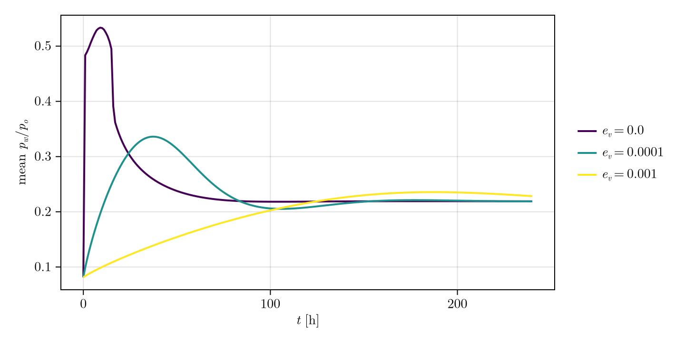

Parabolic head scheme
With e_v = 0 (the default) the head has no memory: each step solves an elliptic equation, and h jumps to the balance of the current gap and input. A non-zero englacial void ratio e_v adds the storage term e_v ∂h/∂t of (Sommers et al., 2018) (Eq. 13), so the head equation becomes parabolic and h takes time to follow a change in the input. The same PicardSolver solves both: with e_v > 0 its rows also store the englacial water e_v (h - z_b), between the bed and the overburden head where the sheet has unfilled cavities and uplift (whose water is the sheet's own).
This page runs when the docs are built. It spins up the margin of the Tutorial, then raises the input from 1 to 10 m/a and follows the water pressure for ten days with e_v = 0, 1e-4 and 1e-3.
using Shakti
using CairoMakie
using Statistics: meanSpin-up
The tutorial's margin with the defaults, 100 days of 1-day steps at 1 m/a.
nx, ny = 80, 20
grid = Grid(nx, ny, 20000.0, 5000.0)
mask = fill(GROUNDED, nx, ny)
mask[1, :] .= LAND
mask[end, :] .= OTHER_BASIN
mask[:, [1, end]] .= OTHER_BASIN
zs = [6 * (sqrt(x + 5000.0) - sqrt(5000.0)) + 1 for x in grid.x, y in grid.y]
spy = 365 * 86400.0
sl = RegularizedCoulombSlidingLaw(0.25)
state0 = State(grid)
set_initial_conditions!(state0, grid, ModelParameters(), sl, mask, fill(5e-25, nx, ny), zeros(nx, ny), zs,
fill(0.01, nx, ny), fill(0.05, nx, ny), fill(1e-6, nx + 1, ny), zeros(nx, ny + 1),
fill(1.0 / spy, nx, ny), zeros(nx + 1, ny), zeros(nx, ny + 1))
ps = PicardSolver(200, 1e-6, LUDirectSolver(grid), grid)
run!(Simulation(grid, state0, 100, floattype(86400.0), ModelParameters(), ConstantMeltInput(), sl; ps = ps))The step in the input
set_ieb_external! adds 9 m/a on top of the 1 m/a, the way a coupled model adds its own input. Only e_v changes between the runs. Hourly steps resolve the response.
dt, nsteps = 3600.0, 240
gr = mask .== GROUNDED
runs = map((0.0, 1e-4, 1e-3)) do e_v
st = deepcopy(state0)
set_ieb_external!(st, fill(9.0 / spy, nx, ny))
p = ModelParameters(e_v = e_v)
sim = Simulation(grid, st, nsteps, floattype(dt), p, ConstantMeltInput(), sl;
ps = PicardSolver(200, 1e-6, LUDirectSolver(grid), grid), observer = LiveObserver(["pw", "po"], 0:nsteps))
run!(sim)
pw, po = sim.observer.history["pw"], sim.observer.history["po"]
(e_v = e_v, ratio = [mean(pw[:, :, k][gr] ./ po[:, :, k][gr]) for k in axes(pw, 3)])
end;Results
The mean p_w/p_o over the margin. All runs end near the same pressure, about 0.22, set by the gap.
e_v = 0: the pressure jumps from 0.08 to 0.48 in the first step, because the gap is still sized for 1 m/a, peaks at 0.53 after nine hours and falls back over about three days as the gap opens.e_v = 1e-4: the water first fills the englacial voids; the pressure peaks at 0.34 after about a day and a half, dips to 0.21 at four days and settles within a week.e_v = 1e-3: the pressure rises over days, overshoots slightly (0.24 at about eight days) and is still settling after ten.
hours = (0:nsteps) .* dt ./ 3600
colors = cgrad(:viridis, 3; categorical = true)
fig = Figure(size = (720, 360))
ax = Axis(fig[1, 1]; xlabel = L"t\ [\mathrm{h}]", ylabel = L"\mathrm{mean}\ p_w/p_o",
xtickformat = vs -> [L"%$(round(Int, v))" for v in vs], ytickformat = vs -> [L"%$(round(v, digits = 2))" for v in vs])
for (c, r) in enumerate(runs)
lines!(ax, hours, r.ratio; color = colors[c], linewidth = 2, label = L"e_v = %$(r.e_v)")
end
Legend(fig[1, 2], ax; framevisible = false)
fig